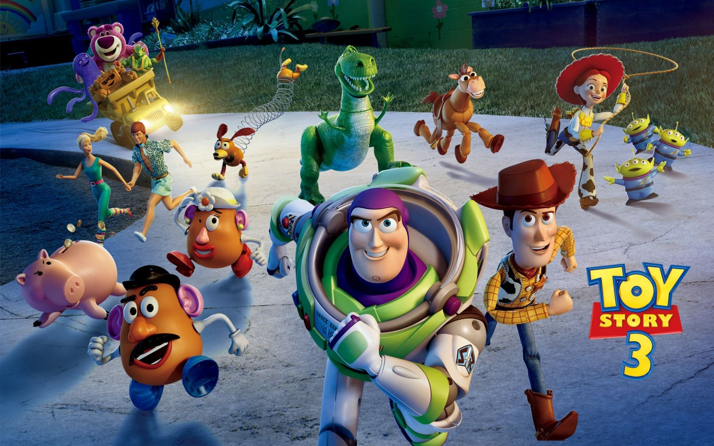

Third Toy Story

모든 장난감들이 겪는 가장 슬픈일은 바로 주인이 성장해 더이상 자신들과 놀아주지 않는 것.
우디와 버즈에게도 그 위기가 찾아온다. 앤디가 대학에 진학, 집을 떠나게 된 것.
헤어짐의 불안에 떨던 토이들은 앤디 엄마의 실수로 집을 나오게 된 이들은 우여곡절 끝에 탁아소에 기증되는 신세가 된다!
그런데 오마이갓, 어린이집 애들 장난이 아니게 난폭하고 험하다. 그리고 상상도 못했던 거대한 음모까지 숨겨져 있는 어린이집 장난감의 세계.
그러다 앤디가 여전히 자신들을 사랑한다는 사실을 알게 된 토이 군단은 앤디 곁으로 돌아가기 위해 생애 가장 큰 모험을 결심한다.
우디를 중심으로 똘똘뭉친 토이들 과연 이들의 위대한 탈출은 성공할 것인가!